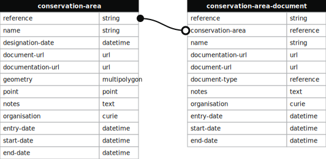

Conservation area
Abstract
This specification defines the format and contents which a planning authority or other party may use to provide information about one or more conservation areas.
Status of this specification
Candidate standard
This document sets out the requirements for providing data in conformance to the specification which is currently under development. Providing data to this draft specification is at present optional, though encouraged.
This is a draft specification, following the standards for planning data process [process]. The contents of this specification are currently under development, and liable to change based on feedback.
This document places no obligations on any party to provide data in conformance to this specification.
A future version of this specification may be formally published on GOV.UK, and cited as one of a number of official data standards for the provision of planning data under the proposed Levelling-up and Regeneration Act 2023 [LURA].
This technical specification is accompanied by guidance, examples and other tools which provide feedback to organisations creating data to this specification.
Comments and feedback on this specification may be provided on the GitHub discussion or sent to digitalland@communities.gov.uk.
Version: 1.4.3 — published 2023-09-08
Conformance
As well as sections marked as non-normative, all authoring guidelines, diagrams, examples, and notes in this specification are non-normative. Everything else in this specification is normative.
The key words MAY, MUST, NOT, and SHOULD in this document are to be interpreted as described in [RFC2119] when, and only when, they appear in all capitals [RFC8174] as shown here.
Source documentation
The source documentation is a web page where the user should go to confirm the validity of information provided in the data.
The source documentation SHOULD be a web page accessible as [HTML] from a public [URL].
Finding the information on the organisation's official website helps users check the information in the data. It increases the trust the user may place in the origin of the data, and that it is more likely to be sustained.
The source documentation SHOULD be on the offical website for the organisation.
A Local Authority or other public body should put the documentation page under their .gov.uk domain.
The source documentation MAY either contain the [endpoint documentation], or link to one or more separate [Endpoint documentation] pages.
Endpoint documentation
The endpoint documentation is a web page where a user can find a link to where they can download the data (the endpoint), along with other information relevant to a data user, such as the date the data was last updated. Every endpoint needs to be findable via a link on the [Source documentation] page, and the endpoint documentation can be on the source page, on a separate documentation point for each endpoint, or a combination thereof.
The documentation for an endpoint SHOULD be accessible as [HTML] from a public [URL].
The endpoint documentation URL SHOULD have the same [URL] as the source documentation.
The endpoint documentation include a hyperlink to one or more endpoints for Conservation area data.
The endpoint documentation include a hyperlink to one or more endpoints for Conservation area document data.
The endpoint documentation page SHOULD include a clear licence for reusing the data.
The data SHOULD be published as [Crown Copyright] under [OGL3].
This data is © Crown copyright and available under the Open Government Licence v3.0.
The endpoint documentation page SHOULD include any further attribution a user of the data needs to provide if they copy, publish, distribute or otherwise retransmit the data.
Dataset relationships
The following diagram illustrates the [Datasets] specified by this document, and how data in a dataset entry may reference, or be referenced by an entry in another dataset.
Datasets
Conservation area
An area of special architectural or historic interest, the character or appearance of which it is desirable to preserve or enhance.
The Conservation area dataset contain at least one entry for each Conservation area for which the data provider is the responsible authority.
Each Conservation area entry MUST contain the following fields:
Each Conservation area entry SHOULD contain the following fields:
Each Conservation area entry MAY contain the following fields:
- [reference]
- [name]
- [designation-date]
- [document-url]
- [documentation-url]
- [geometry]
- [point]
- [notes]
- [organisation]
- [entry-date]
- [start-date]
- [end-date]
Fields
reference
provide a reference such as CA01
name
the official name for the conservation area
designation-date
the date that the conservation area was officially designated
document-url
a URL to the authoritative source for the area, this is often a PDF containing a map with the area drawn on it
documentation-url
a URL to a page on the local planning authority website that provides information about the conservation area
geometry
the boundary of a designated conservation area
point
provide the centre point of the conservation area if you do not have a full geometry available
notes
provide any extra information if needed
organisation
the organisation responsible for conservation areas
entry-date
the date the information has been entered as a record
start-date
the date the validity of the record starts
end-date
the date the validity of the record ends
Conservation area document
.
The Conservation area document dataset contain at least one entry for each Conservation area document for which the data provider is the responsible authority.
Each Conservation area document entry MUST contain the following fields:
Each Conservation area document entry SHOULD contain the following fields:
Each Conservation area document entry MAY contain the following fields:
- [reference]
- [conservation-area]
- [name]
- [documentation-url]
- [document-url]
- [document-type]
- [notes]
- [organisation]
- [entry-date]
- [start-date]
- [end-date]
Fields
reference
provide a reference such as CA01-decision-notice
conservation-area
the reference for the conservation area this document is about
name
the title of the conservation area document
documentation-url
the URL of the webpage citing the document
document-url
the URL of the document
document-type
the type of the conservation area document which must be one of the following values: 'area-appraisal', 'notice', or leave blank
[conservation-area-document-type dataset]notes
provide any extra information if needed
organisation
the organisation that published the document
entry-date
the date this information has been entered as a record
start-date
the date the validity of the record starts
end-date
the date the validity of the record ends
Fieldtypes
Reference
A reference value MUST be suitable as the reference part of a [CURIE] identifier.
A reference SHOULD be persistent. A reference SHOULD be used by the data provider to identify the same entity in the future.
The reference MAY be used in other contexts to refer to the entity. For example, the reference MAY be used to construct a URL to a web page with more information about the Conservation area.
A reference SHOULD be short and meaningful to a user. For example, the reference MAY be used to refer to the entity when completing an offline form, or contacting a call centre.
Datatypes
Date
Dates MUST conform to [ISO8601] following the [Open Standards for government guidance [formatting-dates-and-times-in-data].
A date value SHOULD be blank if it is unknown.
The date MAY just contain the year 'YYYY' if only the year is known, or 'YYYY-MM' if only the year and month is known.
Geometry
A geometry field MAY be eiher a single POLYGON or MULTIPOLYGON value.
When using Comma Separated Value (CSV), the geometry SHOULD be encoded as Well Known Text [WKT].
All points SHOULD be either in the [WGS84] (EPSG::4326) or [ETRS89] (EPSG::4258) coordinate reference system following the [Open Standards for government] guidance [exchange-of-location-point].
Boundaries provided by this dataset are intended to be used as an index. Positions calculated by the WGS84 and ETRS89 systems can currently deviate by half a metre for points within England. Survey data should be used where more precision is needed.
Text
All text fields MUST be encoded in UTF-8 [RFC3629] following the [Open Standards for government] guidance [encoding-characters].
Historical data
Removing historical data can reduce the trust a user places in the quality of the data. There are also many uses for historical documents, data and material information in planning, such as when developing an older property, processing an appeal, and monitoring the delivery of housing on older brownfield land, and when collecting evidence for plan-making.
Entries SHOULD NOT be changed or removed from the data except to correct a mistake, or for the purposes of redacting personal or otherwise sensitive information.
An entity SHOULD be updated by adding another entry to the data with the same reference and a newer `entry-date`.
Entries SHOULD be ordered within a dataset by the `entry-date` value, with older entries appearing before later entries.
The [end-date] field should be used to indicate when an entity is no longer applicable.
Data file formats
Data MUST be provided in at least one of the following file formats:
- Comma Separated Value (CSV) [RFC4180]
- GeoJSON [RFC7946]
- OGC [GML]
- OGC [Geopackage]
- OGC Keyhole Markup Language [KML]
The preferred format for geospatial data is GeoJSON.
Tabular data SHOULD be provided as (CSV) [RFC4180] following the [Open Standards for government] guidance [tabular-data-standard].
Field names
The case and punctuation used in field names is insignificant, meaning
fields with the name Start Date, StartDate, START_DATE and start.date
are all valid ways of naming the start-date field.
A field name SHOULD be treated as being case insensitive.
Any non-alphanumeric characters in a field name SHOULD be treated as being insignificant.
Examples
Security and privacy considerations
The data MUST NOT contain any personal or sensitive information, unless explicitly required by this specification, or legislation.
There is a risk of people's names or other personally identifiable information appearing in the data, in particular notes, description and other text fields. It is the responsibility of the data provider to review and redact such information before publication. For example, the [OGL3] licence does not cover personal data in the Information.
Colophon
This document is © Crown Copyright and available under the Open Government Licence version 3 licence.
References
Normative references
- [RFC2119]
-
Key words for use in RFCs to Indicate Requirement Levels.
IETF Best Current Practice.
https://tools.ietf.org/html/rfc2119
- [RFC8174]
-
Ambiguity of Uppercase vs Lowercase in [RFC2119] Key Words.
IETF Best Current Practice.
https://datatracker.ietf.org/doc/html/rfc8174
- [RFC3629]
-
UTF-8, a transformation format of ISO 10646.
IETF Internet Standard.
https://datatracker.ietf.org/doc/html/rfc3629
- [RFC4180]
-
Common Format and MIME Type for Comma-Separated Values (CSV) Files.
IETF Informational.
https://datatracker.ietf.org/doc/html/rfc4180
- [RFC7946]
-
The GeoJSON Format.
Proposed Standard.
https://datatracker.ietf.org/doc/html/rfc7946
- [RFC3339]
-
Date and Time on the Internet: Timestamps.
IETF Proposed Standard.
https://datatracker.ietf.org/doc/html/rfc3339
- [RFC3386]
-
IETF Standard. Uniform Resource Identifier (URI): Generic Syntax.
https://datatracker.ietf.org/doc/html/rfc3986
- [tabular-metadata]
-
Metadata Vocabulary for Tabular Data.
W3C Recommendation.
https://www.w3.org/TR/2015/REC-tabular-metadata-20151217/
- [URI-Fragment]
-
Section 3.5 of [RFC3986] Fragment Identifier of a URI
https://datatracker.ietf.org/doc/html/rfc3986#section-3.5
- [tabular-data-model]
-
Model for Tabular Data and Metadata on the Web.
W3C Recommendation.
https://www.w3.org/TR/2015/REC-tabular-data-model-20151217
- [GML]
-
Geography Markup Language (GML).
Open Geospatial Consortium standard (ISO 19136-1:2020).
https://www.ogc.org/standards/gml
- [KML]
-
OGC KML 2.3.
Open Geospatial Consortium standard (12-007r2).
http://www.opengis.net/doc/IS/kml/2.3
- [Geopackage]
-
OGC Geopackage 1,4
Open Geospatial Consortium standard (12-128r19).
http://www.opengis.net/doc/IS/geopackage/1.4
- [OGL3]
-
Open Government Licence for public sector information.
Version 3.
https://www.nationalarchives.gov.uk/doc/open-government-licence/version/3/
- [crown-copyright]
-
Crown copyright.
Section 163 of the Copyright, Designs and Patents Act 1988 as works made by officers or servants of the Crown in the course of their duties.
https://www.nationalarchives.gov.uk/information-management/re-using-public-sector-information/uk-government-licensing-framework/crown-copyright/
Informative references
- [LURA]
-
Levelling-up and Regeneration Act. Originated in the House of Commons, Session 2022-23.
https://www.legislation.gov.uk/ukpga/2023/55/enacted
- [process]
-
Ministry for Housing, Communities & Local Government planning data standards design process (service under development).
https://design.planning.data.gov.uk
- [CURIE]
-
CURIE Syntax 1.0 A syntax for expressing Compact URIs.
W3C Working Group Note.
https://www.w3.org/TR/2010/NOTE-curie-20101216/
- [open-standards-for-government]
-
Government Digital Service and Central Digital and Data Office.
Open standards for government
- [encoding-characters]
-
Encoding characters
Open Standards for Government.
https://www.gov.uk/government/publications/open-standards-for-government/cross-platform-character-encoding-profile
- [persistent-resolvable-identifiers]
-
Persistent resolvable identifiers.
Open Standards for Government.
https://www.gov.uk/government/publications/open-standards-for-government/persistent-resolvable-identifiers
- [formatting-dates-and-times-in-data]
-
Formatting dates and times in data.
Open Standards for Government.
https://www.gov.uk/government/publications/open-standards-for-government/date-times-and-time-stamps-standard
- [publishing-government-documents]
-
Publishing government documents.
Open Standards for Government.
https://www.gov.uk/government/publications/open-standards-for-government/viewing-government-documents
- [exchange-of-location-point]
-
Exchange of location point.
Open Standards for Government.
https://www.gov.uk/government/publications/open-standards-for-government/exchange-of-location-point
- [tabular-data-standard]
-
Tabular data standard.
Open Standards for Government.
https://www.gov.uk/government/publications/recommended-open-standards-for-government/tabular-data-standard
- [using-csv]
-
Using CSV file format.
Central Digital and Data Office guidance.
https://www.gov.uk/guidance/using-csv-file-format
- [csv-on-the-web]
-
CSV on the Web: A Primer.
W3C Working Group Note.
https://www.w3.org/TR/tabular-data-primer/
- [EPSG-4326]
-
WGS84 - World Geodetic System 1984, used in GPS.
EPSG Geodetic Parameter Dataset.
https://epsg.io/4326
- [GDAL]
-
GDAL.
Open Source Geospatial Foundation.
https://gdal.org/
- [TAB]
-
MapInfo TAB format.
https://en.wikipedia.org/wiki/MapInfo_TAB_format
- [Shapefile]
-
ESRI Shapefile format.
https://en.wikipedia.org/wiki/Shapefile
- [ZIP]
-
ZIP format.
https://en.wikipedia.org/wiki/ZIP_(file_format)
- [HTML]
-
WHATWG HTML. Living Standard.
https://html.spec.whatwg.org/
- [URL]
-
WHATWG URL. Living Standard.
Interoperability of URL with URI and IRI values.
https://url.spec.whatwg.org/
Previous versions
- [LURA]
- Levelling-up and Regeneration Act. Originated in the House of Commons, Session 2022-23. https://www.legislation.gov.uk/ukpga/2023/55/enacted
- [process]
- Ministry for Housing, Communities & Local Government planning data standards design process (service under development). https://design.planning.data.gov.uk
- [CURIE]
- CURIE Syntax 1.0 A syntax for expressing Compact URIs. W3C Working Group Note. https://www.w3.org/TR/2010/NOTE-curie-20101216/
- [open-standards-for-government]
- Government Digital Service and Central Digital and Data Office. Open standards for government
- [encoding-characters]
- Encoding characters Open Standards for Government. https://www.gov.uk/government/publications/open-standards-for-government/cross-platform-character-encoding-profile
- [persistent-resolvable-identifiers]
- Persistent resolvable identifiers. Open Standards for Government. https://www.gov.uk/government/publications/open-standards-for-government/persistent-resolvable-identifiers
- [formatting-dates-and-times-in-data]
- Formatting dates and times in data. Open Standards for Government. https://www.gov.uk/government/publications/open-standards-for-government/date-times-and-time-stamps-standard
- [publishing-government-documents]
- Publishing government documents. Open Standards for Government. https://www.gov.uk/government/publications/open-standards-for-government/viewing-government-documents
- [exchange-of-location-point]
- Exchange of location point. Open Standards for Government. https://www.gov.uk/government/publications/open-standards-for-government/exchange-of-location-point
- [tabular-data-standard]
- Tabular data standard. Open Standards for Government. https://www.gov.uk/government/publications/recommended-open-standards-for-government/tabular-data-standard
- [using-csv]
- Using CSV file format. Central Digital and Data Office guidance. https://www.gov.uk/guidance/using-csv-file-format
- [csv-on-the-web]
- CSV on the Web: A Primer. W3C Working Group Note. https://www.w3.org/TR/tabular-data-primer/
- [EPSG-4326]
- WGS84 - World Geodetic System 1984, used in GPS. EPSG Geodetic Parameter Dataset. https://epsg.io/4326
- [GDAL]
- GDAL. Open Source Geospatial Foundation. https://gdal.org/
- [TAB]
- MapInfo TAB format. https://en.wikipedia.org/wiki/MapInfo_TAB_format
- [Shapefile]
- ESRI Shapefile format. https://en.wikipedia.org/wiki/Shapefile
- [ZIP]
- ZIP format. https://en.wikipedia.org/wiki/ZIP_(file_format)
- [HTML]
- WHATWG HTML. Living Standard. https://html.spec.whatwg.org/
- [URL]
- WHATWG URL. Living Standard. Interoperability of URL with URI and IRI values. https://url.spec.whatwg.org/
Previous versions
These specifications are living documents. When we make material changes to the data structure we update the version number.
Previous versions of the conservation-area specification are: